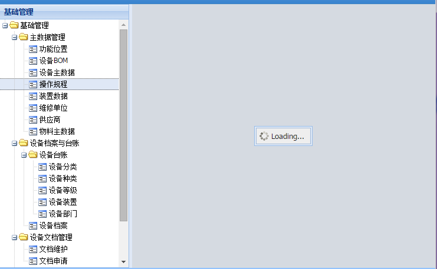

在网络较慢，加载数据量很大，或者后台反应较慢的情况之下，嵌入式的iframe会出现加载空白的现象
Ext.create("Ext.container.Viewport", {
layout : "border",
items : [eam.examples.main.MainTree, {
region : "center",
border : false,
html : "<iframe id='myGrid' src='1.html' width='100%' height='100%' frameborder='0' scrolling='auto' name='center'>"
}
]
});
用exrjs4.2版本及以上的使用Ext.ux.IFrame，它的xtpye:'uxiframe'
Ext.create("Ext.container.Viewport", {
layout : "border",
items : [eam.examples.main.MainTree, {
region : "center",
xtype : 'uxiframe',
border : false,
id : 'mainFrame'
}
]
});
默认加载页面时代码：
initIframe = function (src) {
var frame = Ext.getCmp("mainFrame");
if (frame) {
frame.load(src);
}
};
处理后效果：页面在加载过程中会自动出现加载进度效果
